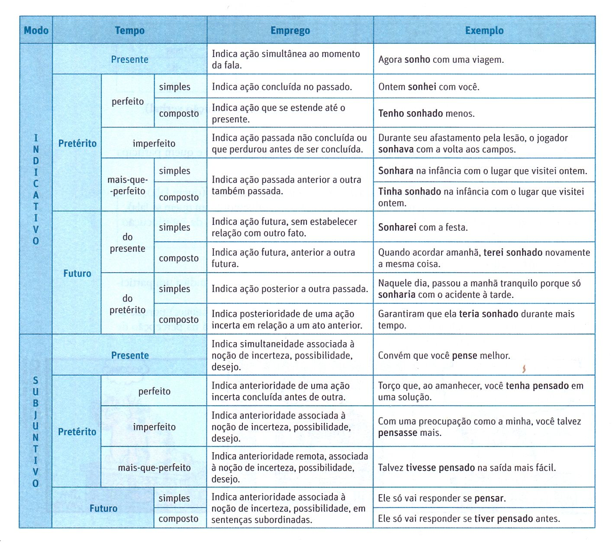

É a palavra dinâmica que denota ação, estado e fenômeno, flexionando-se em tempo, modo, número, pessoa e voz.
Indicativo:
exprime ação real, cateógorica, positiva:"Encontrei" o livro. "Falarei" com ela amanhã.
Subjuntivo:
exprime ação irreal, hipotética, duvidosa: Talvez eu "fale" com ele amanhã.
Imperativo:
exprime ordem, súplica, pedido ou convite: "Fale" a verdade.
Infinitivo:
É quando o verbo apresenta-se na sua forma original, isto é, ele não é conjugado.
Para melhor entendimento, é preciso lembrar-se daquelas três terminações: primeira conjugação - AR; segunda conjugação - ER; terceira conjugação - IR.
O infinitivo impessoal não se refere a nenhuma pessoa, de modo que simplesmente manifesta a ação e, algumas vezes, pode ter valor de substantivo.
Exemplos:
Ele tem um falar horrível!
Ajudar é a melhor forma de gratidão.
Rir é o melhor remédio.
E o Impessoal, onde o processo verbal não se restringe a nenhum ser, ou seja, não existe sujeito se relacionando com o verbo.
Exemplificando, temos: Fazer atividade física é essencial à saúde.
Particípio:
revela o tempo passado da ação verbal e sua ocorrência manifesta-se nas locuções verbais, nos tempos compostos e nas orações reduzidas.
Sua terminação é em ADO e IDO.
Exemplos
Se você tivesse avisado, não teria chegado antes.
Aprovado no concurso, iniciarei meu projeto.
Gerúndio:
O gerúndio caracteriza-se pela terminação -ndo. Ele não se flexiona e pode exercer o papel de advérbio e de adjetivo.
Exemplos:
Estava falando pelos cotovelos quando eu cheguei.
Acenando, disse adeus.
Passarinhos cantando era o que eu precisava para relaxar.
Presente:
Expressa um fato atual. Por exemplo:
Eu estudo neste colégio.
Pretérito Imperfeito:
Expressa um fato ocorrido num momento anterior ao atual, mas que não foi completamente terminado. Por exemplo:
Ele estudava as lições quando foi interrompido.
Pretérito Perfeito:
Expressa um fato ocorrido num momento anterior ao atual e que foi totalmente terminado. Por exemplo:
Ele estudou as lições ontem à noite.
Pretérito-Mais-Que-Perfeito:
Expressa um fato ocorrido antes de outro fato já terminado. Por exemplo:
Ele já estudara as lições quando os amigos chegaram.(tinha estudado)
Futuro do Presente:
denota ação verbal posterior ao presente ou momento da enunciação. Por exemplo:
Partirei em silêncio.
Enfrentarás tranquilo as provas.
Futuro do Pretérito:
denota ação verbal, cujo ponto de referência é o passado ou momento anterior ao ato da enunciação verbal. Por Exemplo:
Partiria em silêncio.
Enfrentaria facilmente as provas (se estudasse anteriormente).
Voz ativa:
Na voz ativa o sujeito é agente, ou seja, pratica a ação.
Exemplos:
Bia tomou o café da manhã logo cedo.
Aspiramos a casa toda.
Já fiz o trabalho.
Voz passiva:
Na voz passiva o sujeito é paciente e, assim, não pratica, mas recebe a ação.
Exemplos:
A vítima foi vista ontem à noite.
Aumentou-se a vigilância desde ontem.
A voz passiva pode ser analítica ou sintética.
a)Voz passiva analítica:
o verbo está na forma composta.
b)Voz passiva sintética:
o verbo é seguido do pronome se, denominado pronome apassivador.
Voz Reflexiva:
Na voz reflexiva o sujeito é agente e paciente ao mesmo tempo, uma vez que ele pratica e recebe a ação.
Exemplos:
A velhinha sempre penteia-se antes de sair.
Eu me cortei hoje quando estava cozinhando.
